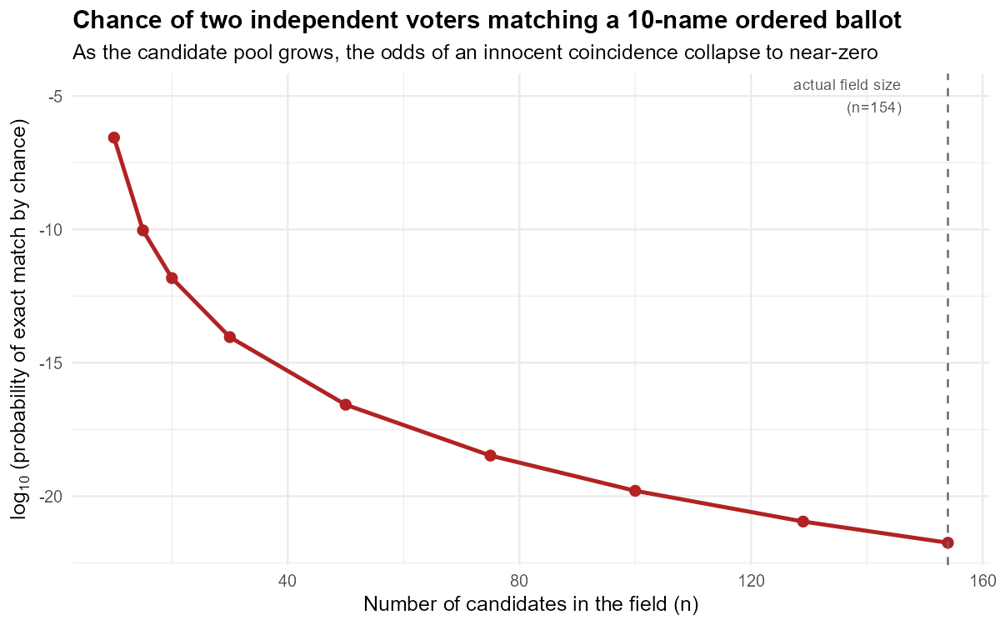
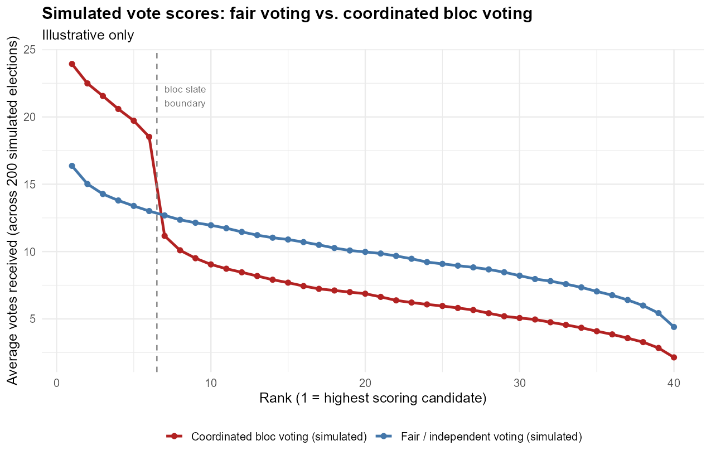

A Statistical Look at the 2024 Thai Senate Ballot-Matching Evidence
A direct rebuttal of the “it’s technically possible” defense
The code is on GitHub.
Update, November 2026. This was written in August, while the Election Commission was still reviewing the case. On 14 September 2026 the Commission voted to petition the Supreme Court and bring criminal proceedings against 77 people, 26 of them sitting senators (Fulcrum). None of that changes the arithmetic below, which is about the ballots and not about any particular person.
What this is (and isn’t)
One argument keeps coming up about the ฮั้ว ส.ว. (Senate collusion) case. Several voters handed in identical ballots, the same names in the same order, but defenders say a chance match isn’t impossible, so collusion can’t be proven statistically. I wanted to see whether that holds up.
This piece doesn’t try to decide the case, say who is guilty, or verify the vote data myself. It does four narrower things:
- Re-derives from scratch the probability figures that mathematician Loy Chunpongtong (ลอย ชุนพงษ์ทอง) published about the June 2024 national-level Senate selection, to check the arithmetic.
- Checks the method with a Monte Carlo simulation on a small version of the same problem.
- Puts the result next to probability thresholds that science, forensics, and the courts already treat as conclusive. That comparison is the actual answer to “it’s technically possible”.
- Uses simulated (not real) scores to show why a reported jump in vote totals between 6th and 7th place would point to bloc voting rather than noise.
Figures taken from news reports are linked in the Sources section at the end. Anything I generated myself, like the simulations and the benchmark table, is labelled as mine. Where the public data runs out, I say so.
1. Background
Thailand chose its Senate (สมาชิกวุฒิสภา) in June 2024 through a closed, multi-round process. Candidates were split into 20 professional groups. At the national round on 26 June, members of each group first voted among themselves in the morning, cutting each group down to 40. In the afternoon, groups voted across for each other’s candidates to pick the final 10 senators per group.
Since then, the Election Commission’s inquiry, the DSI’s AI-assisted video analysis, documents released by opposition MPs, and independent analysts have all pointed at the same accusation: blocs used โพย (cheat-sheets) to coordinate their votes. That would leave a very particular fingerprint, namely ballots with the same names in the same order, filled in by people who say they don’t know each other.
A senator from the accused side has said publicly that nothing unlawful happened because no money changed hands, and that Thai courts have previously ruled that bringing a cheat-sheet into the polling area isn’t a crime in itself. A separate defence, which I’ve seen repeated widely but can’t attribute to any specific senator, goes further: however unlikely an accidental match is, it isn’t impossible, so intent can’t be shown with statistics. That second claim is the one I’m testing.
2. The probability
The parameters come from public reporting. Each professional group at national level had up to 154 candidates (77 provinces × 2). In the morning round, each voter wrote up to 10 candidate numbers into ten boxes on the ballot. Reports describe 10 ballots carrying the identical sequence. If everyone voted honestly and independently, how likely is that?
A. Two ballots matching. The number of ordered ways to write 10 different names out of 154 is the permutation count \(P(154,10) = 154!/144!\). If voters pick uniformly at random, the chance that a second ballot exactly copies a first one is one over that:
\[\frac{1}{P(154,10)} = \frac{1}{5.567 \times 10^{21}}\]
This is the same “1 in about 5,567 quintillion” figure Loy published. My \(\log_{10}\) of the denominator is 21.746, the same as his to three decimals.
B. All ten ballots matching. Take ballot 1 as the reference. The chance that ballots 2 through 10 each independently match it is that number raised to the ninth power:
\[\frac{1}{P(154,10)^{9}} = \frac{1}{5.134 \times 10^{195}}\]
The denominator has 196 digits. For scale, the observable universe has somewhere around \(10^{82}\) atoms, which is smaller by a factor of about \(10^{114}\).
C. Does the group size matter? Not really. The smallest group reported had 129 candidates, which is the most generous case for the coincidence theory. That gives \(P(129,10) \approx 8.92\times 10^{20}\), so a two-ballot match is still about 1 in \(10^{21}\).
D. How small would the field need to be? Smaller than it can get. Even if there were only 10 candidates, so that every voter had to list all of them, two ballots would only agree on the order 1 time in \(10! = 3{,}628{,}800\). A fifty-fifty chance of a match isn’t reachable with 10 ordered picks at any field size.
E. What if voters aren’t random? This is the fairest objection. Real voters don’t pick uniformly: some candidates are better known, and people from the same province may favour the same names. So suppose, very generously, that every voter in the group ignored everyone except the same 20 favourites and only had to decide the order. Two ballots would still match only once in \(P(20,10) \approx 6.7 \times 10^{11}\) tries, roughly 1 in 670 billion. Popularity can explain why the same names turn up on many ballots. It can’t explain the same names in the same order, ten times over.
In short: two independent ballots matching by chance is about 1 in \(5.6\times10^{21}\), which agrees with Loy’s figure. All ten matching is about 1 in \(5\times10^{195}\).
3. Checking the method
Numbers this large can’t be checked by brute force, so I tested the formula on a toy version I could simulate: 8 candidates, 3 picks.
| value | |
|---|---|
| Theoretical P(match), \(n=8\), \(k=3\) | 0.002976 |
| Empirical P(match), 300,000 simulated pairs | 0.002787 |
| Relative difference | 6.4% |
With 300,000 trials the standard error on that estimate is about 3.3%, so the simulated value sits a little under two standard errors from the formula. That’s ordinary sampling noise, and nothing points to the formula being wrong. The same formula applies at \(n=154\), \(k=10\); it just can’t be simulated there, since you’d need well over \(10^{21}\) trials to expect a single match.
Holding \(k=10\) fixed and growing the field shows how fast the odds collapse: about \(10^{-6.6}\) at 10 candidates, \(10^{-11.8}\) at 20, \(10^{-19.8}\) at 100, and \(10^{-21.7}\) at the real figure of 154.

4. “It’s not impossible”
The defence is that the match isn’t literally impossible, so it could be coincidence. That’s true, but it doesn’t help. Outside of logical contradictions, nothing in probability is ever exactly impossible. If “not exactly zero” were enough to dismiss evidence, no statistical evidence could count for anything.
Here’s where these numbers sit next to thresholds people already accept:
| scenario | log₁₀ probability |
|---|---|
| Statistical significance (\(p<0.05\)) | −1.30 |
| “Highly significant” in most sciences (\(p<0.001\)) | −3.00 |
| Being struck by lightning in a US lifetime (~1 in 15,300) | −4.18 |
| Six Sigma defect rate (~3.4 per million) | −5.47 |
| Winning a 6/49 lottery jackpot with one ticket | −7.15 |
| Random DNA profile match, unrelated person (common estimate) | −9.00 |
| Winning a 6/49 jackpot three draws in a row | −21.44 |
| This case: 2 ballots matching by chance | −21.75 |
| Atoms in the observable universe, as a reference (\(10^{82}\)) | −82.00 |
| This case: all 10 ballots matching | −195.71 |
(The DNA and Six Sigma rows are standard order-of-magnitude reference values, not figures from this case. They’re there to show how unlikely something has to be before courts and industry treat chance as ruled out.)
None of those rows is zero either. A drug trial with \(p<0.05\) could still be a fluke under the null hypothesis; we act on it anyway, because calling it chance would be unreasonable. A DNA match at about one in a billion isn’t impossible, and courts still convict on it.
The two-ballot figure is about 13 orders of magnitude rarer than that DNA match. The ten-ballot figure is about 114 orders of magnitude beyond the number of atoms in the universe. And the “not impossible” argument works exactly as well against odds of one in a billion as against odds of one in \(10^{195}\). An argument that never gets weaker however extreme the numbers become isn’t measuring anything. Whether something is possible was never the right question. The right question is whether chance is the best explanation, and here it clearly isn’t.
5. A second pattern: the jump after 6th place
Separately from the matching ballots, Loy also pointed to the afternoon round, where candidates ranked 1st to 6th in each group scored unusually high compared with those ranked 7th to 10th. Under independent voting you wouldn’t expect a sharp break like that.
I don’t have the real scores, so what follows is a demonstration on simulated data, not a claim about the actual results:
| rank | independent voting | bloc voting |
|---|---|---|
| 1 | 16.36 | 23.93 |
| 2 | 15.02 | 22.49 |
| 3 | 14.28 | 21.56 |
| 4 | 13.80 | 20.59 |
| 5 | 13.39 | 19.72 |
| 6 | 13.01 | 18.52 |
| 7 | 12.69 | 11.16 |
| 8 | 12.36 | 10.10 |
| 9 | 12.14 | 9.51 |
| 10 | 11.96 | 9.04 |

The gap between 6th and 7th is 0.32 points with independent voting and 7.36 points when a bloc votes together for a slate of six, about 23 times larger. Independent voting gives a smooth slope. A bloc gives a cliff right where its slate ends, because its six candidates all get the same block of extra votes and nobody else does.
That’s the shape Loy described in the real data. This section only shows why that shape would point to coordination if the description is accurate. It doesn’t confirm the real data looks like this or by how much. It’s a test to run once the actual tallies are public.
6. Summary
| Question | Answer |
|---|---|
| Does the “1 in 5.567 × 10²¹” figure check out? | Yes. Re-derived independently; same number. |
| Is the method sound? | Yes. A small-scale Monte Carlo agrees within sampling error. |
| Does the exact group size matter? | No. The smallest reported group (129) still gives about 1 in 10²¹. |
| Does non-random voting rescue the coincidence theory? | No. Even limiting every voter to the same 20 favourites leaves odds of about 1 in 670 billion per pair. |
| Does “it’s technically possible” work as a defence? | No. The same logic would throw out DNA evidence, clinical trials, and Six Sigma, none of which deal in zero probabilities either. |
| Does the reported jump after 6th place matter? | Probably, going by the simulation, but it needs the real vote data to confirm. |
Statistics can’t settle intent. Who coordinated with whom, and whether anything was paid or promised, are legal questions these numbers don’t answer. What they do show is that “the match is merely possible, so chance can’t be ruled out” doesn’t survive contact with the standards of evidence used everywhere else.
Sources
- Posttoday (28 Feb 2025), Loy Chunpongtong’s probability figures and the 1st–6th vs 7th–10th score pattern: posttoday.com/politics/domestic/720251
- iLaw, how the national-level selection worked (up to 154 candidates per group, 10 votes written into ten boxes): ilaw.or.th/articles/40978
- Fulcrum (ISEAS), the Election Commission’s 14 September 2026 decision: fulcrum.sg